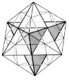

Table of Contents
100.00 SYNERGY
100.01 Introduction: Scenario of the Child
100.010 Awareness of the Child
100.020 Human Sense Awareness
100.030 Resolvability Limits
100.10 Subdivision of Tetrahedral Unity
100.101 Synergetic Unity
100.120 Icosa and Tetra
100.20 Scenario of the Child
100.30 Omnirational Subdividing
100.3011 Necklace
100.304 Cheese Tetrahedron
100.310 Two Tetra into Cube
100.320 Modular Subdivision of the Cosmic Hierarchy
100.330 "Me" Ball
100.40 Finite Event Scenario
100.41 Foldability of Triangles into Tetrahedra
100.415 Unfoldable Limit
100.50 Constant Triangular Symmetry
100.60 Finite Episoding
101.00 Definition: Synergy
120.00 Mass Interattraction
130.00 Precession and Entropy
140.00 Corollary of Synergy: Principle of the Whole System
150.00 Synergy-of-Synergies
160.00 Generalized Design Science Exploration
180.00 Design Science and Human-Tolerance Limits
Next Page
Copyright © 1997 Estate of Buckminster Fuller